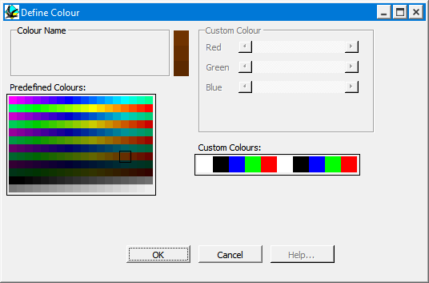

Colour definition
This window allows you to define the colour of lithological units and faults. Click on the colour you like, select them from the unhelpful list of colour names, or select one of the Custom Colours and define your own colour.
For 3D Voxel views, the program needs to find one darker colour and one lighter colour to match the colour chosen, in order to simulate shaded lighting. For this reason it is always better to choose medium brightness colours than darker or lighter ones. The three colours which will be uased are displayed to the right of the Colour Name Menu.

Noddy · open source under the MIT licence · Loop3D/noddy_qt